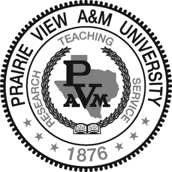

This page is known to render incorrectly with Internet Explorer version 9 and below. Consider an upgrade:
Computer Science Department
Prairie View A&M University
Welcome
Computer Science faculty and staff are committed to excellence and update the program to meet the present and future needs of industry and the society.
The Department offers three degree programs:
-
Bachelor of Science Program in Computer Science
accredited by the Computing Accreditation Commission of the Accreditation Board for Engineering and Technology (ABET) - Masters of Science degree in Computer Science
- Masters of Science degree in Computer Information Systems
Mission
The mission of the Department of Computer Science in the Roy G. Perry College of Engineering at Prairie View A & M (PVAMU) consists of three interrelated components:
- providing the highest quality instruction to the students,
- conducting leading-edge research in computer science and engineering,
- and providing leadership and service to our professional communities.
Faculty Research
The faculty and students are also involved with many research and development projects. These research projects focus on a variety of topics including:
- Artificial Intelligence
- BioInformatics
- Computer Visualization
- Computer Graphics and Animation
- Database Management
- Computer Network - Optical Networks
- Global Carbon Dioxide - Climate Changes
- Radio Frequency Identification (RFID)
In summary, our mission is to provide top quality education to all students by delivering excellence in teaching, research and service.
Salient Features of our program are:
- Established in 1987
- Accredited by Computing Accreditation Commission of ABET
- One of Seven Accredited CS Programs/Departments in Texas
- One of Two Accredited CS Programs in the TAMU System
- One of Seven HBCU's to receive Accreditation
Degree Information
The Computer Science B.S. program is fully qualified by the Computing Accreditation Commission (CAC) of the Accreditation Board for Engineering and Technology (ABET). The curriculum is designed and evaluated using the joint recommendations of the Association for Computing Machinery (ACM) and the Computer Society of the Institute of Electrical Engineers (IEEE-CS). Our graduates have the necessary skills and knowledge to complete an advanced degree in computer science or to obtain and excel in a professional position. The undergraduate program in Computer Science leads to a bachelor of science (BS) degree.
The program emphasizes the development of the skills and analytical abilities necessary to specify, design, and develop computer-based solutions to complex systems problems. Students receive extensive instruction in all areas of computer science including operating systems and scientific, industrial and commercial applications programming.
Graduates of the Computer Science program possess qualifications for a myriad of job opportunities both in industry and in government. Our students are prepared to meet the challenges of advanced degree programs.
Employers who have hired our graduates include:
- AT&T
- IBM
- EDS
- General Electric
- Nortel
- Hewlett Packard
- Boeing
- Motorola
- Raytheon
- BMC Software
- Lockheed-Martin
- MCI
- SPRINT
- Microsoft
- Federal Express
- Alcatel
- NASA
High School Preparation
The College of Engineering hosts summer programs such as the Computer Science Concepts Institute for High School students who are interested
in engineering fields such as Computer Science . High School graduates entering the Computer Science program should have a solid background in the physical sciences and mathematics,
an above average ability to conceptualize, a proficiency in oral and written communications, and an interest in the humanities.
While in high school, these classes are recommended but all are not mandatory for entry:
Math: Algebra, Trigonometry or Calculus
Science: Biology, Chemistry or Physics
English: Writing course or English Literature
Technology: C of C++ programming (Optional)
For more information please contact us at:
Tel: (936)261-9870
Email: Computer Science Admissions
Minor Requirements
Computer Science Courses (23 credit hours)
- COMP 1214 Computer Science and Lab I
- COMP 1224 Computer Science and Lab II
- COMP 2013 Data Structures
- COMP 2033 Assembly Language
- Nine semester hours of upper-division Computer Science courses
Mathematics Courses (8 credit hours)
- MATH 1124 Calculus I
- MATH 2024 Calculus II
Total: 31 credit hours
Bachelors of Science (BS) in Computer Science
- Admission Requirements
- Degree Plan - Catalog 2004
- Degree Plan - Catalog 2005
- Degree Plan - Catalog 2006
- Degree Plan - Catalog 2008
- Degree Plan - Catalog 2012
- Degree Plan Elective Options
- CS Courses Flowchart
- Minoring in CS
- Undergraduate Catalog
The Computer Science B.S. program is fully qualified by the Computing Accreditation Commission (CAC) of the Accreditation Board for Engineering and Technology (ABET). The curriculum
is designed and evaluated using the joint recommendations of the Association for Computing Machinery (ACM) and the Computer Society of the Institute of Electrical Engineers (IEEE-CS).
Our graduates have the necessary skills and knowledge to complete an advanced degree in computer science or to obtain and excel in a professional position.
The undergraduate program in Computer Science leads to a bachelor of science (BS) degree.
The program emphasizes the development of the skills and analytical abilities necessary to specify, design, and develop computer-based solutions to complex systems problems. Students
receive extensive instruction in all areas of computer science including operating systems and scientific, industrial and commercial applications programming.
Graduates of the Computer Science program possess qualifications for a myriad of job opportunities both in industry and in government such as Software Engineer, Programmer,
Programmer-Analyst, Systems Analyst, Network Analyst, Project Leader, Project Manager, CIO Vice President. Our students are also prepared to meet the challenges of advanced degree programs.
Employers who have hired our graduates include AT&T, IBM, EDS, General Electric, Nortel, Hewlett Packard, Boeing, Motorola, Raytheon, BMC Software, Lockheed-Martin, MCI, SPRINT, Microsoft, Federal Express, Alcatel, NASA, Texas
Master of Science (MS)
Resources
Thesis Manuals
Master Thesis
- Master Thesis Manual: Word version and PDF version
- Student and Advisor Agreement Form: Word version and PDF version (You must present this form signed by you and your advisor to Graduate Coordinator in order to register for Thesis)
- Computer Science Thesis Committee Form: Word Version
- Computer Information Systems Thesis Committee Form: Word version
- Master Project Manual: Word version and PDF version
- Student and Advisor Agreement Form: Word version and PDF version (You must present this form signed by you and your advisor to Graduate Coordinator in order to register Project)
- Computer Science Project Committee Form: Word version and PDF version
- Computer Information Systems Project Committee Form: Word version and PDF version
Thesis Resources
Contact
General inquiries can be made at cs@pvamu.edu.
Directory
| First Name | Last Name | Title | Phone | Office | |
|---|---|---|---|---|---|
| Akhtar | Lodgher Ph.D. | Professor | alodgher@pvamu.edu | 936-261-9859 | S R Collins Room 308 |
| Sherri | Frizell Ph.D. | Associate Professor | ssfrizell@pvamu.edu | 936-261-9873 | S R Collins Room 315 |
| Lin | Li Ph.D. | Associate Professor, Graduate Program Coordinator | lilin@pvamu.edu | 936-261-9882 | S R Collins Room 111H |
| JD | Oliver | Associate Professor | jdoliver@pvamu.edu | 936-261-9876 | S R Collins Room 326 |
| Myrtle | Tompkins | Associate Professor | mhtompkins@pvamu.edu | 936-261-9880 | S R Collins Room 304 |
| Yonggao | Yang Ph.D. | Associate Professor, Interim Department Head | yoyang@pvamu.edu | 936-261-9884 | S R Collins Room 111G |
| Kiranmai | Bellam Ph.D. | Assistant Professor | kibellam@pvamu.edu | 936-261-9883 | Collins Room 317 |
| Lei | Huang Ph.D. | Assistant Professor | lhuang@pvamu.edu | 936-261-9878 | Collins Room 314 |
| Yi | Lu Ph.D. | Assistant Professor | yilu@pvamu.edu | 936-261-9862 | Collins Room 323 |
| Iyengar | Ravi | Instructor, Undergraduate Program Coordinator | rniyengar@pvamu.edu | 936-261-9875 | S R Collins Room III J |
| Heejin | Lim Ph.D. | helim@pvamu.edu | 936-261-9870 | S R Collins Room 201 | |
| Sharon | Daniels | sedaniels@pvamu.edu | 936-261-9870 | S R Collins Room 201 | |
| Darla | Effinger | Administrative Secretary | daeffinger@pvamu.edu | 936-261-9874 | S R Collins Room 111J |
| La'Cheverjuan | Bennett | System Analyst | lmbennett@pvamu.edu | 936-261-9881 | S R Collins Room 111I |